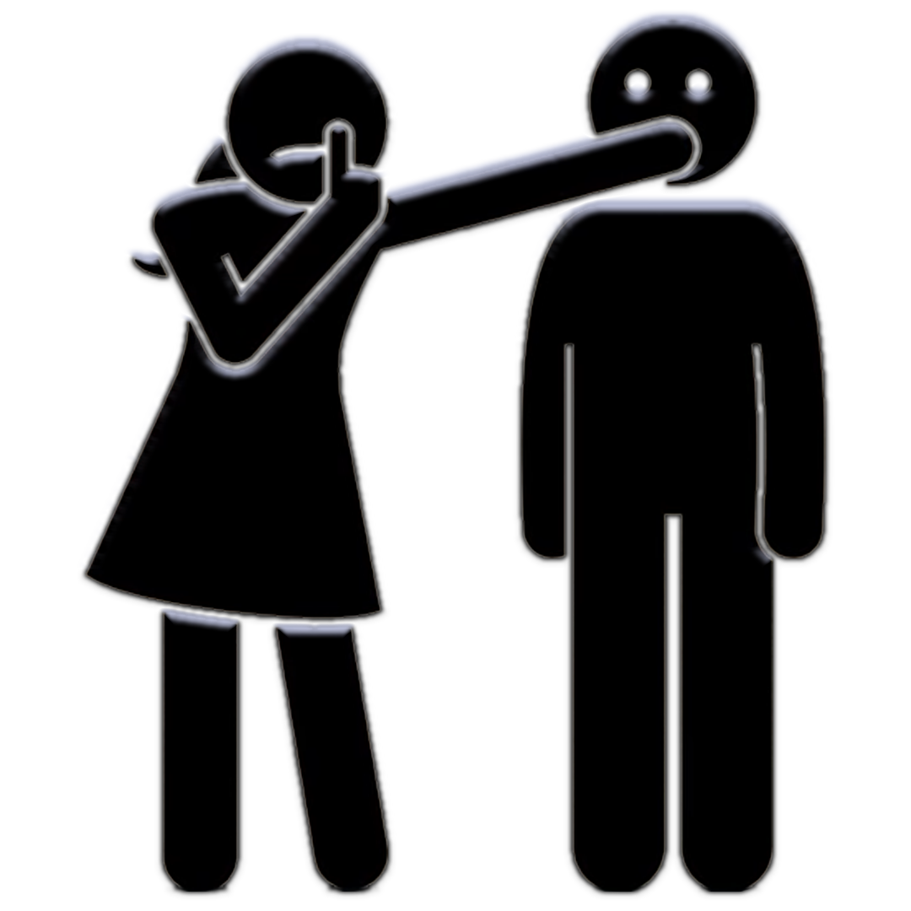

a desktop widget for Windows — your stats, media, automation, local projects and people, floating quietly on your desktop.
⬇ Download for Windowsfree · auto-updating · by devuandoru
CPU, GPU, RAM, disk, network, temps, per-core load and history — at a glance.
Play / pause, seek, and switch sources for whatever's playing on your PC.
Auto-clicker, macro record/play, key presser, timers, color picker, notes.
Scaffold & run bots, websites, APIs and more on your own machine — zero setup.
See who's online, with a persona you pick — name, status, emoji.
13 accent themes, opacity, shimmer — and it updates itself.